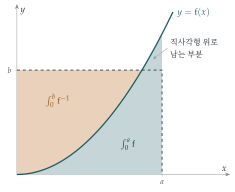

STEP III 2011, 문제 4
계속 읽기 전에 문제를 먼저 읽어 보자. 문제는 STEP Support Programme의 문제 데이터베이스에 있다: step.maths.org/questions/11-s3-q4
도입
여기 우표 한 장에 들어갈 만큼 단순한 그림으로 증명되는 부등식이 있다. 원점을 지나는 증가하는 곡선을 하나 그려 보자. 곡선 아래의 넓이와 곡선 왼쪽의 넓이를 더하면 언제나 직사각형 하나를 덮는다. 이 관찰 하나에서 영 부등식(Young’s inequality) \(ab \leq \frac{a^p}{p} + \frac{b^q}{q}\)가 나오고, 이 부등식은 다시 해석학에서 가장 중요한 도구 가운데 두 가지인 횔더(Hölder) 부등식과 코시-슈바르츠(Cauchy–Schwarz) 부등식의 열쇠가 된다.
이 그림에는 더 깊은 아이디어도 담겨 있다. 그림은 함수와 그 역함수(inverse function)를 완벽하게 대칭적으로 짝짓는데, 이 짝짓기를 일반화한 것이 바로 르장드르 변환(Legendre transform)이다. 르장드르 변환은 고전역학의 두 가지 위대한 정식화를 이어 주고, 열역학의 두 가지 주요 기술 방식도 이어 준다.
시작하기 전에
\(\int_0^a \mathrm{f}(x)\,\mathrm{d}x\)는 곡선과 \(x\)축 사이의 넓이이다. 같은 그림에서 \(\int_0^b \mathrm{f}^{-1}(y)\,\mathrm{d}y\)는 어떤 넓이를 나타내는가?
\(x = \mathrm{f}^{-1}(y)\)의 그래프는 \(y = \mathrm{f}(x)\)와 같은 곡선을 옆에서 본 것이다. 따라서 \(\int_0^b \mathrm{f}^{-1}(y)\,\mathrm{d}y\)는 높이 \(0\)부터 높이 \(b\)까지 곡선과 \(y\)축 사이의 넓이이다. 이것만 알면 소문항 (i)은 그림을 그리는 문제일 뿐이다.
차근차근 풀기
단계 1 그림
꼭짓점이 \((0, 0)\)과 \((a, b)\)인 직사각형을 그려 보자. \(0\)부터 \(a\)까지 곡선 아래의 영역을 한 가지 색으로, \(0\)부터 \(b\)까지 곡선 왼쪽의 영역을 다른 색으로 칠해 보자. 두 영역이 직사각형을 덮는가? 겹치는 부분도 남는 부분도 없는 것은 언제인가?
두 영역을 합치면 직사각형 \([0, a] \times [0, b]\) 전체를 덮고, 보통은 그 바깥의 넓이도 어느 정도 덮는다(그림 3.4.1). 직사각형의 모든 점 \((x, y)\)는 곡선 아래에 있거나(\(x \leq a\)이므로 첫째 영역에 속한다) 곡선 왼쪽에 있다(\(y \leq b\)이므로 둘째 영역에 속한다). 따라서 칠해진 넓이의 합은 적어도 직사각형의 넓이 \(ab\) 이상이다. 이것이 \((*)\)이다.

남는 부분은 곡선과 직사각형의 꼭짓점 사이에 있는 작은 곡선 모양의 영역이다. 이 영역은 곡선이 꼭짓점 \((a, b)\)를 지날 때, 그리고 그때에만 사라진다. 즉 \[b = \mathrm{f}(a).\] 일 때이다.
단계 2 영 부등식
\(\mathrm{f}(x) = x^{p-1}\)이면 \(\mathrm{f}^{-1}(y)\)는 무엇인가? 두 적분을 모두 계산하고, \(\frac1p + \frac1q = 1\)을 이용하여 둘째 적분을 깔끔하게 정리해 보자.
\(p > 1\)이므로 \(\mathrm{f}(x) = x^{p-1}\)은 연속이고 증가하며 \(\mathrm{f}(0) = 0\)이고, \(\mathrm{f}^{-1}(y) = y^{1/(p-1)}\)이다. 그러면 \[\int_0^a x^{p-1}\,\mathrm{d}x = \frac{a^p}{p}, \qquad \int_0^b y^{1/(p-1)}\,\mathrm{d}y = \frac{b^{1 + 1/(p-1)}}{1 + 1/(p-1)}.\] 이다. \(\frac1p + \frac1q = 1\)에서 \(q = \frac{p}{p-1}\)이므로 \(1 + \frac{1}{p-1} = \frac{p}{p-1} = q\)이고, 둘째 적분은 \(\frac{b^q}{q}\)이다. 따라서 \((*)\)는 \[ab \leq \frac{a^p}{p} + \frac{b^q}{q}. \qed\] 가 된다. 등호는 \(b = \mathrm{f}(a) = a^{p-1}\)일 때 성립해야 한다. 확인해 보자. 이때 \(ab = a^p\)이고 \(b^q = a^{(p-1)q} = a^p\)이므로, 우변은 \(a^p\bigl(\frac1p + \frac1q\bigr) = a^p\)이다.■
\(p = q = 2\)이면 이 부등식은 \(ab \leq \frac{a^2 + b^2}{2}\)가 되는데, 이는 3.2 절에서 다룬 두 수에 대한 산술-기하 평균 부등식(AM–GM inequality)이 모습을 바꾼 것이다.
단계 3 역사인 함수
이제 \([0, \frac\pi2]\)에서 \(\mathrm{f}(x) = \sin x\)를 생각하자. 이 함수는 연속이고 증가하며 \(\mathrm{f}(0) = 0\)이고, \([0, 1]\)에서 \(\mathrm{f}^{-1} = \arcsin\)이다.
\(\int_0^a \sin x\,\mathrm{d}x\)는 쉽다. \(\arcsin y\)는 어떻게 적분할 것인가?
\(\int_0^a \sin x\,\mathrm{d}x = 1 - \cos a\)이다. 역사인 함수는 \(\arcsin y \times 1\)로 보고 부분적분(integration by parts)한다. \[\int_0^b \arcsin y\,\mathrm{d}y = \Bigl[ y\arcsin y \Bigr]_0^b - \int_0^b \frac{y}{\sqrt{1 - y^2}}\,\mathrm{d}y = b\arcsin b + \sqrt{1 - b^2} - 1.\] 두 결과를 더하면 \((*)\)에서 \(ab \leq b\arcsin b + \sqrt{1 - b^2} - \cos a\)를 얻는다.■
이제 \(\arcsin(t^{-1})\)에 대한 부등식을 이끌어 내 보자. \(a\)의 값으로 무엇을 택해야 할까? (가장 단순한 값을 시도해 보자.)
\(a = 0\)으로 두면 \(0 \leq b\arcsin b + \sqrt{1 - b^2} - 1\), 즉 \(b\arcsin b \geq 1 - \sqrt{1 - b^2}\)이다. (이는 \(\int_0^b \arcsin y\,\mathrm{d}y \geq 0\)이라는 사실을 말할 뿐이다.) \(t \geq 1\)에 대하여 \(b = 1/t\)로 두면 \(0 < b \leq 1\)이고, 양변을 \(b\)로 나누면 \[\arcsin\left(\frac1t\right) \geq t\left(1 - \sqrt{1 - \frac{1}{t^2}}\right) = t - \sqrt{t^2 - 1}. \qed\] 이다.
돌아보기
증명으로서의 그림. 소문항 (i)은 알맞은 그림을 보기만 하면 그것으로 완전한 증명이 된다. 기하학적 사실을 적분 사이의 부등식으로 옮기는 것은 강력한 기법이다.
일반적인 결과를 특수화하기. 하나의 일반적인 부등식에서 \(\mathrm{f}\)를 달리 택하여 영 부등식과 \(\arcsin\)에 대한 부등식을 얻었다.
가장 단순한 선택이 올바른 선택일 수 있다. 마지막 유도에서는 부등식이 거의 자명해지는 \(a = 0\)을 사용했다. 언제나 쉬운 경우를 시도해 보자.
숨은 수학
William Henry Young은 1912년에 이 부등식을 발표했다. 이 부등식의 중요성은 그것이 이끌어 내는 결과에서 나온다. \(\sum a_i^p = 1\)이고 \(\sum b_i^q = 1\)이라고 하자. 각 쌍에 영 부등식을 적용하여 더하면 \[\sum a_i b_i \leq \frac{\sum a_i^p}{p} + \frac{\sum b_i^q}{q} = \frac1p + \frac1q = 1.\] 이다. 합이 \(1\)이 되도록 \(a\)들과 \(b\)들의 크기를 조정하면 횔더 부등식을 얻는다. 양수들에 대하여 \[\sum a_i b_i \leq \Bigl(\sum a_i^p\Bigr)^{1/p} \Bigl(\sum b_i^q\Bigr)^{1/q}.\] \(p = q = 2\)이면 이는 코시-슈바르츠 부등식 \(\sum a_ib_i \leq \sqrt{\sum a_i^2}\sqrt{\sum b_i^2}\)이 되는데, 이 부등식은 두 벡터(vector) 사이의 각의 코사인이 \(1\) 이하라는 것을 말해 준다. 횔더 부등식은 \(L^p\) 공간 이론의 토대이다. \(L^p\) 공간은 “거리”를 \(\bigl(\int |f|^p\bigr)^{1/p}\)로 재는 함수들의 공간으로, 함수해석학(functional analysis)과 확률론 강의에서 만나게 될 것이다.
르장드르 변환
그림 3.4.1의 그림은 \(\mathrm{f}\)와 \(\mathrm{f}^{-1}\)을 완전히 대칭적으로 다룬다. \(F(a) = \int_0^a \mathrm{f}\), \(G(b) = \int_0^b \mathrm{f}^{-1}\)이라고 쓰자. 부등식은 \(F(a) + G(b) \geq ab\)이고 곡선 위에서 등호가 성립한다는 것이므로 \[G(b) = \max_a \bigl( ab - F(a) \bigr).\] 이다. 볼록함수(convex function) \(F\)를 새로운 볼록함수 \(G\)로 바꾸는 이 연산이 르장드르 변환이며, 이를 두 번 적용하면 다시 \(F\)로 돌아온다. 역학에서 르장드르 변환은 위치와 속도의 함수인 라그랑지안(Lagrangian)을 위치와 운동량의 함수인 해밀토니안(Hamiltonian)으로 바꾼다. 이 둘은 뉴턴(Newton)의 법칙에 대한 동치인 두 정식화로, 대학 2학년 강의에서 만나게 될 것이다. 열역학에서는 에너지, 엔탈피(enthalpy), 자유 에너지(free energy) 사이를 오가게 해 준다. \(F(a) = a^p/p\)의 변환은 \(G(b) = b^q/q\)이며, 영 부등식의 두 지수가 \(\frac1p + \frac1q = 1\)로 연결되어 있는 것은 이 때문이다.
사고 기술
적분은 넓이이다. 잘 고른 그림에서 넓이를 비교하면, 대수적으로는 알아보기 어려운 부등식을 증명할 수 있다.
한 영역이 다른 영역을 분명히 포함하거나, 여러 영역이 또 다른 영역을 분명히 덮는 그림을 찾아보자. 그런 다음 각 넓이를 적분으로 옮긴다.
더 도전하기
1987년 버전. STEP I 1987, 문제 6을 풀어 보자. 같은 종류의 그림을 이용하여 역함수를 적분하는 문제이다. 미분하여 답을 검산해 보자.
코시-슈바르츠. \(p = q = 2\)인 영 부등식을 이용하여 양수들에 대하여 \(a_1b_1 + a_2b_2 + a_3b_3 \leq \sqrt{a_1^2 + a_2^2 + a_3^2}\,\sqrt{b_1^2 + b_2^2 + b_3^2}\)임을 증명하여라. (힌트: 먼저 두 제곱근이 모두 \(1\)인 경우를 다루어라.)
지수함수 버전. \((*)\)에서 \(\mathrm{f}(x) = e^x - 1\)로 두어, \(a, b \geq 0\)에 대하여 \[ab \leq e^a - 1 - a + (1 + b)\ln(1 + b) - b.\] 임을 보여라. 등호는 언제 성립하는가?
이 한계는 얼마나 좋은가? 심화 계산기를 이용하여 \(t = 1, 2, 10\)에 대해 \(\arcsin(1/t)\)와 \(t - \sqrt{t^2 - 1}\)을 비교하여라. \(t\)가 클 때 \(t - \sqrt{t^2 - 1} \approx \frac{1}{2t}\)이고 \(\arcsin(1/t) \approx \frac1t\)임을 보여라. 왜 이 한계는 \(2\)배만큼 차이가 나는가? (\(a = 0\)일 때의 그림을 보자. 남는 부분 가운데 얼마만큼이 낭비되는가?)
더 읽을거리
J. Michael Steele, The Cauchy–Schwarz Master Class (Cambridge University Press). 제1장과 제9장에서 코시-슈바르츠 부등식과 횔더 부등식을 다루며, 그 과정에서 영 부등식도 소개한다.
Roger Nelsen, Proofs Without Words (Mathematical Association of America). 말 없는 증명. 영 부등식을 비롯한 여러 그림 증명이 실려 있다.
V. I. Arnold, Mathematical Methods of Classical Mechanics (Springer). 고전역학의 수학적 방법. 아르놀트(Arnold)는 제14절에서 바로 이 그림으로 르장드르 변환을 설명한다. 수준이 높지만 해당 절은 짧다.